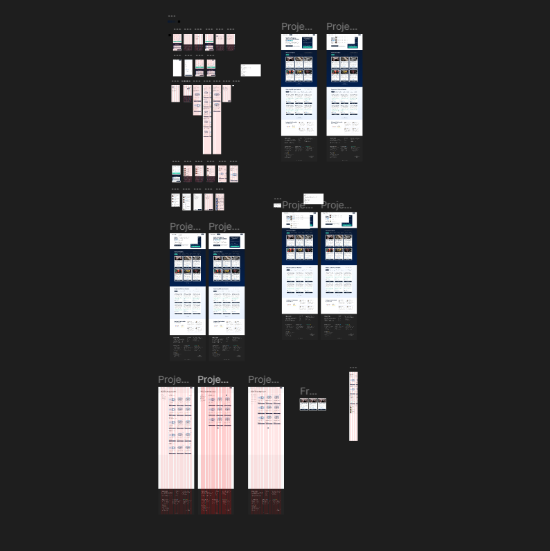
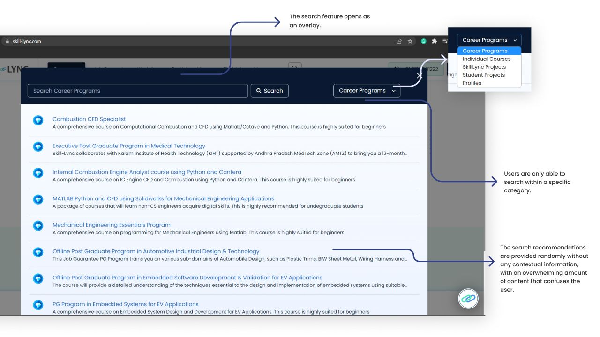
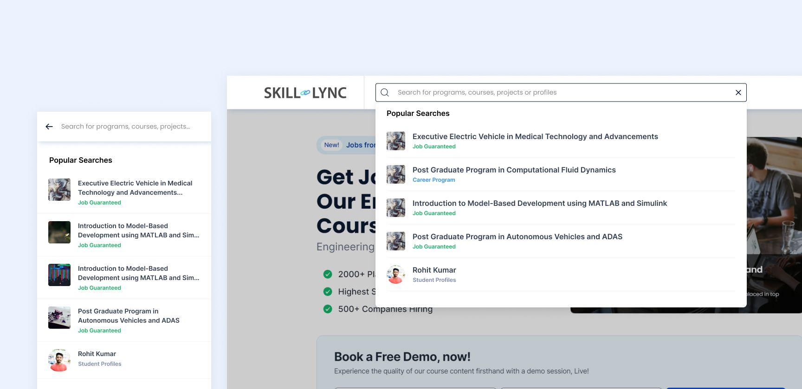
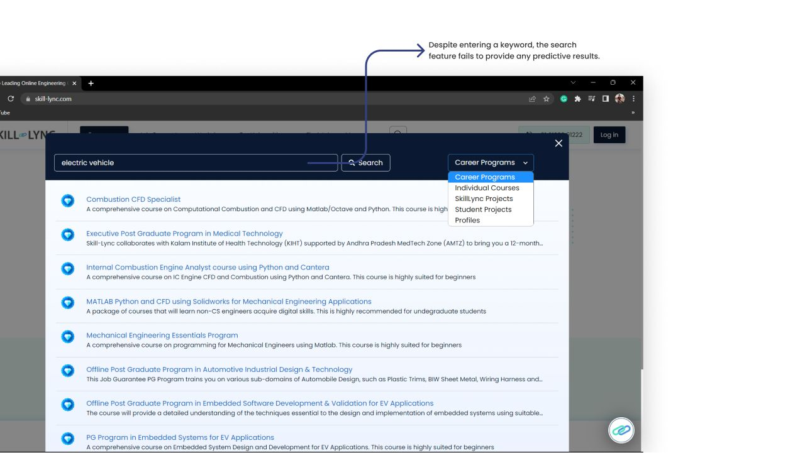
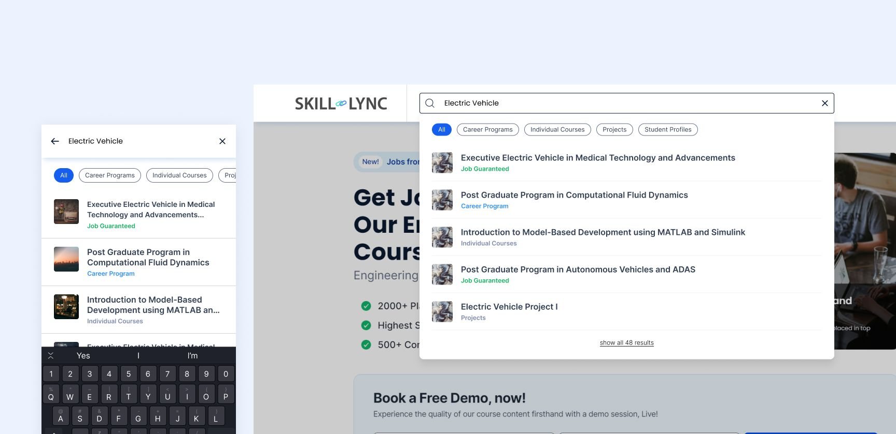
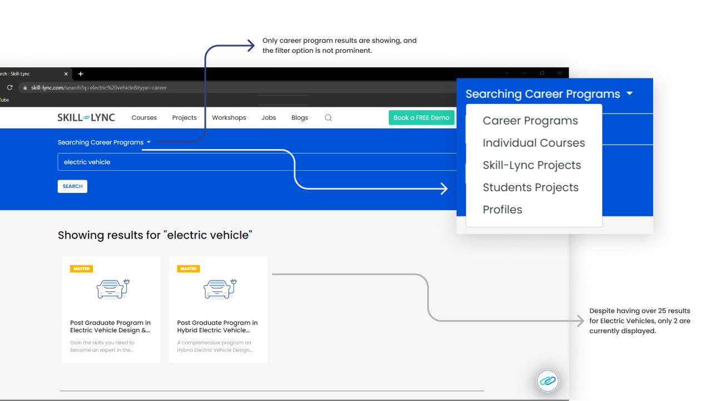
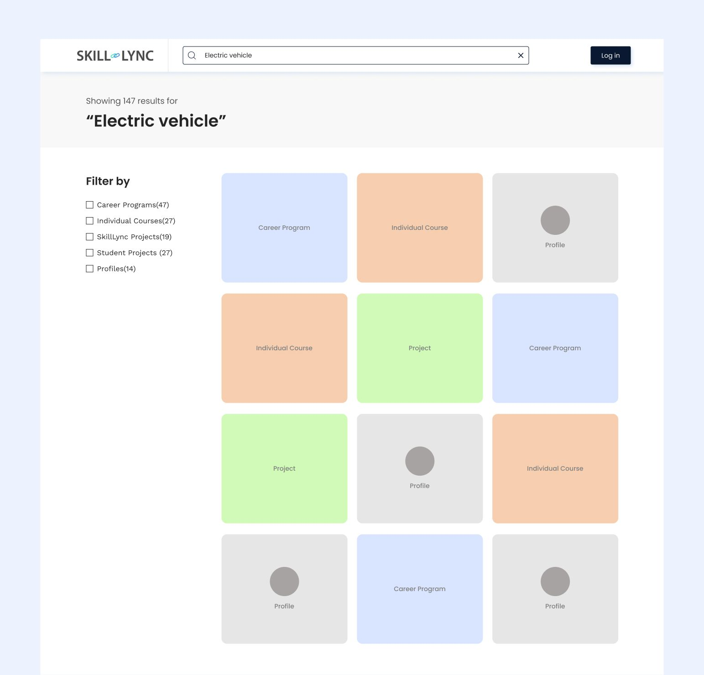
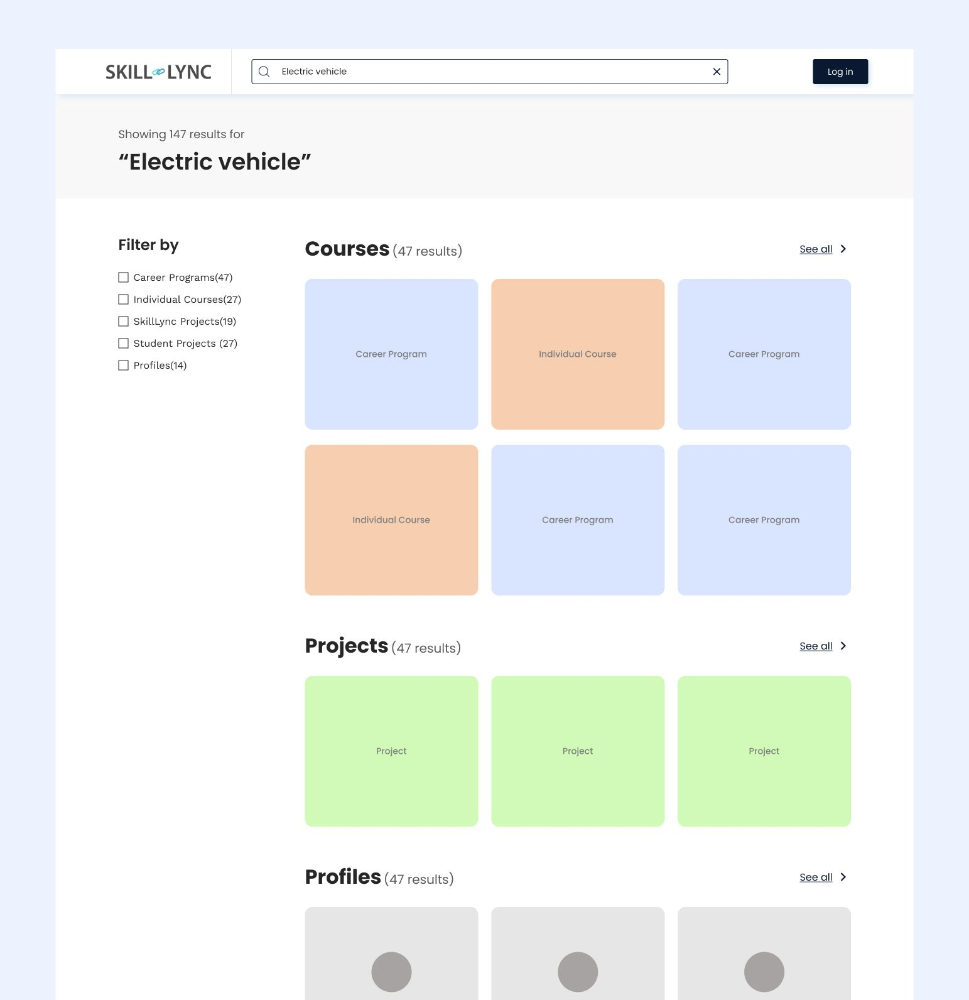
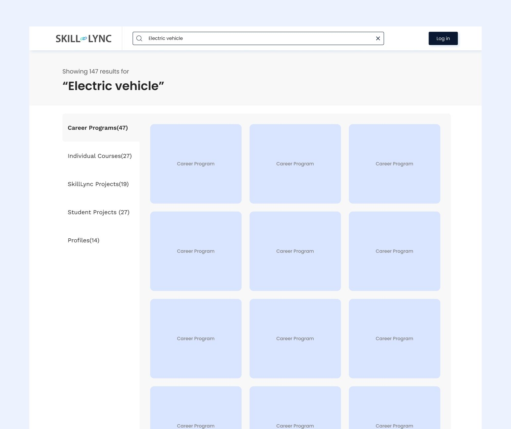
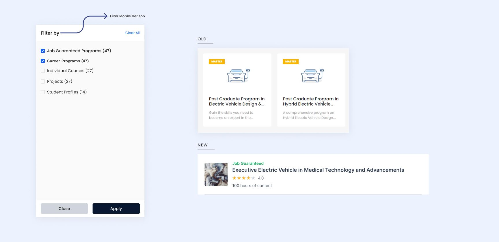

Design process and challenges
- The absence of a standardized design system posed a challenge, and we planned to initiate its development. As a result, even while designing small components like tags, we had to ensure compatibility with the upcoming design system. Although it was a challenging process, the effort proved worthwhile.
- I analyzed websites that effectively utilized design patterns, particularly in the context of filters and searches. Additionally, I performed a competitive analysis, examining other websites that extensively implemented these patterns to inform my design decisions.
- I created multiple versions to identify the most effective approach.

I. Fixing the search tab and filter
- In the previous design, the search feature would open as a large overlay, taking up the entire screen.
- Users were restricted to conducting searches within a single category at a time, be it a career program, individual course, project, or program.
- Unfortunately, I am unable to provide the mobile version screenshot at the moment, but it should be noted that the mobile version lacked the filter, limiting users to searching only for career programs.
- The search suggestions were presented randomly, lacking any contextual information. This resulted in an overwhelming amount of content that could confuse users. Additionally, using a diamond icon to represent a job guarantee or career programs may not have been clear to all users, potentially causing them to mistake it for an unrelated illustration.
- It's important to note that more than 50% of website visitors use mobile devices, and in the mobile version, the course card's subheading was not clearly visible. This could impact the user experience and make it difficult for mobile users to understand the content of the course card.
These observations highlight the areas where the previous design fell short, and improvements were necessary to enhance the search experience and ensure clarity and usability for all users.

- Personalized Suggestions and Visuals Improvement
I made several improvements to enhance the search experience in the new design. Popular searches are displayed for new users, while recent searches are shown for returning users. Filters have been eliminated, and cards have been redesigned with rounded rectangular thumbnails for courses and projects and round images for user profiles.
- Simplified Interface: Informative Tags and Streamlined Course Cards
The diamond icon has been removed and replaced with informative tags. Additionally, the subheading on course cards has been removed to streamline the interface. These changes aim to create a more user-friendly search experience, making it easier for users to find relevant content.

II. Improving search functionality
- In the previous version, the search experience lacked auto-predict functionality and required significant improvement in terms of its visual appeal and user interaction. Users encountered a challenge when entering keywords, as the displayed results had no immediate change or update. This created uncertainty and left users questioning the effectiveness of the search feature.
- Furthermore, students were compelled to apply a filter before initiating a search, or the default filter would automatically generate the results. However, this poses a challenge as students may not initially know whether they want a career program or an individual course. It also restricted users from searching for both categories simultaneously, which could hinder their search experience.
- The project filter was divided into two parts: Skill-Lync projects and student projects. This division was unnecessary as students searching for projects typically do not care about who uploaded them; they simply want to browse through available projects. Adding another filter option was not required and could cause confusion for users.

- Enhanced Search Experience with Real-time Suggestions
In the previous version, the search feature lacked suggestions or assistance, making it challenging for students to find the desired information efficiently.
The updated version provides suggestions as students type, significantly improving the search experience. For instance, when a student searches for "Electric Vehicle," they can select from the suggestions in the drop-down or explore all results related to that query on the results page. This feature reduces errors and saves time by eliminating the need to type out the entire query.
- Improved Search Flexibility with Category Tabs
Furthermore, the previous version limited users to searching within a single category at a time, which restricted their search capabilities.
In the updated version, category tabs have been introduced to enhance the search functionality. These tabs enable users to swiftly switch between different categories and refine their search results based on specific interests or topics.
These enhancements in the search feature aim to provide students with a more efficient and user-friendly search experience, empowering them to quickly find the information they need while reducing errors and saving valuable time.

III. Displaying the results
- The search results currently only display career program results, and the dropdown option to change the search category is not prominently visible. Many users miss this feature as it is blended with the search bar heading.
- In the mobile version, changing the category is challenging as the area above the search bar is small and hard to click accurately. As a result, users often end up clicking on the search bar itself, causing usability issues.
- The presence of two search options on the same page, with a search icon in the top nav bar and a search bar below it, creates redundancy and occupies a significant amount of space, leaving less room for displaying search results effectively.
- Despite having over 25 results for the search query "electric vehicle," only two results are currently shown. Similarly, not all the results for career programs are displayed. Limiting the display to one category at a time increases the likelihood of showing no results, creating potential user frustration.
- The program cards lack essential details such as ratings and course duration. Additionally, the use of tags instead of the previous diamond icon for displaying career programs and job guarantees introduces inconsistency in the design.

Creating the results page presented significant challenges during the project, particularly due to the vast and diverse dataset across different categories. My primary goal was to ensure that students could effortlessly navigate and explore the results page.
To enhance the search experience, I implemented various filtering options for students. They can choose to display results from a single category or select multiple categories to view all relevant results. Throughout the design process, I conducted multiple iterations to explore different solutions, and in this case study, I will discuss three notable iterations.
- Displaying all results at once
The main issue with this design approach is the lack of clear ranking or prioritization of the results. Courses, projects, and profiles would be randomly mixed, making it challenging to determine the criteria for their placement. It becomes difficult to discern why certain cards appear on the top row while others are relegated to lower rows.
In this design, students would need to manually review each card to identify whether it corresponds to a career program, individual course, project, or profile. This approach does not effectively address the need for quickly finding relevant results.

Iteration I
- Categorizing the results into different sections
This iteration organized the results into separate courses, projects, and profile sections. However, a challenge arose with mixing individual courses and career programs within the Courses section. Considering the business aspect and the fact that existing customers are primarily enrolled in career programs is crucial. Career programs, being postgraduate programs, hold significant value and are a unique selling point for the platform. Mixing them with individual courses resulted in a less effective solution, as many individual courses ranked higher than the career programs. Moreover, this approach occupied a substantial amount of space, leading to limited visibility, especially on mobile devices.

Iteration II - Utilizing Tabs for Result Display
Given the significance of career programs, with over 80% of students visiting the website specifically to explore courses in this category, we made the strategic decision to prioritize career programs as the default display option. However, this approach introduced a limitation where students were unable to apply multiple filters simultaneously. Furthermore, we encountered scalability concerns with the design, as the addition of more filters, such as workshops in the future, would compromise the user experience on mobile devices due to an excessive number of tabs.

Iteration III - Final Solution
In the previous design, the concept of job guarantee programs did not exist. It was recently launched. As a result, we needed to incorporate this new program into the design update. Since job guarantee programs share similarities with career programs, both being post-graduate programs with a collection of individual courses, we decided to include the job guarantee program as a filter option. This allowed us to cater to the needs and preferences of students who are specifically interested in programs offering job guarantees. Priority-wise, both job guarantee and career programs hold equal significance.
To cater to the majority of students who primarily use the search tab to find courses, we decided to implement a filter option where both job guarantee and career programs are selected by default. This ensures that relevant program options are readily available to users.

New Final Search Result Page Furthermore, we focused on enhancing the Program card design to provide essential details such as ratings and course duration. This additional information empowers students to make well-informed decisions when evaluating program choices, including both career programs and job guarantee programs.

Filter and Program Card